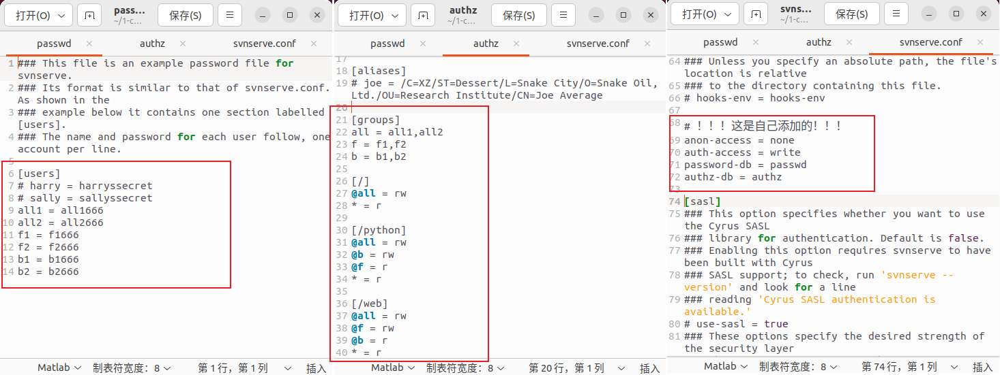

SVN
整理收集
服务器端
该章节介绍一下
ubuntu 22.04
这里使用的是：
安装和检测
svn
sudo apt update
sudo apt install subversion
# 安装完成，检测一下
svn
svn help
svnadmin help
创建仓储
# 新建一个空文件夹，这里是：/home/ddz/1-code/svn/repository
# 如果文件非空，会报错
# 不用 sudo 也可以
sudo svnadmin create /home/ddz/1-code/svn/repository
sudo chmod 777 -R /home/ddz/1-code/svn/repository
配置仓储
配置文件在仓储目录中的
passwd
在这里配置用户民和密码
[users]
# harry = harryssecret
# sally = sallyssecret
all1 = all1666
all2 = all2666
f1 = f1666
f2 = f2666
b1 = b1666
b2 = b2666
authz
在这里配置哪些用户可以可读、可写哪些目录，支持根据角色授权
[groups]
all = all1,all2
f = f1,f2
b = b1,b2
[/]
@all = rw
* = r
[/python]
@b = rw
@f = r
* = r
[/web]
@f = rw
@b = r
* = r

svnserve.conf
这里应该算是仓储的入口配置文件，其中 password-db 指向上面的 passwd 文件，authz-db 指向上面的 authz 文件
[general]
anon-access = none
auth-access = write
password-db = passwd
authz-db = authz
如果你也有这样的习惯：原来的配置文件不动，将这些添加到最后。你一定要注意，这四个配置属于
踩坑记录
这里是错误的示范，
在这种配置之下，用户获取代码时，不用输入用户名和密码，直接可以获取代码。当然，想要修改之后签入代码也是不可能的
导入项目
导入两个示例项目：基于 fastapi 的 python 项目和前端类库 a2bei4 项目
svn import /home/ddz/桌面/fastapi-demo file:///home/ddz/1-code/svn/repository/python/fastapi-demo -m "添加一个 Python 项目"
svn import /home/ddz/桌面/a2bei4 file:///home/ddz/1-code/svn/repository/web/a2bei4 -m "添加前端项目 a2bei4"

启动
svnserve -d -r /home/ddz/1-code/svn/repository --listen-port 3690
# 查看服务
ps -ef | grep svnserve
# 干掉他
killall svnserve
到这里，客户端再次尝试拉取代码就能弹出认证的弹窗了